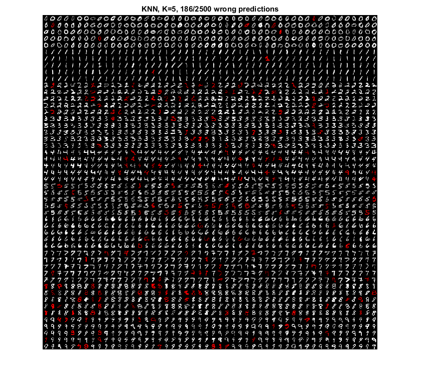

OCR of hand-written digits using kNN
We will use kNN to build a basic OCR application.
Sources:
Contents
Hand-written Digits Dataset
Our goal is to build an application which can recognize handwritten digits. For this we need some train and test data. OpenCV comes with an image digits.png which has 5000 handwritten digits (500 for each digit). Each digit is a 20x20 image. So our first step is to split this image into 5000 different digits. For each digit, we flatten it into a single row with 400 pixels. That is our feature set, i.e intensity values of all pixels. It is the simplest feature set we can create. We split half the data for training, the other half for testing (2500 samples each).
Load MNIST handwritten digits, one big image
fname = fullfile(mexopencv.root(), 'test', 'digits.png'); if exist(fname, 'file') ~= 2 disp('Downloading image...') url = 'https://cdn.rawgit.com/opencv/opencv/3.2.0/samples/data/digits.png'; urlwrite(url, fname); end img = cv.imread(fname, 'Grayscale',true);
split it into 5000 small images (500 from each 0:9 digits), each image is 20x20 pixels
imgs = mat2cell(img, ones(1,5*10)*20, ones(1,100)*20); imgs = reshape(imgs', 5*100, [])'; % cell array of size 10x500 labels = repmat((0:9)', 1, 5*100); % each row is one digit
shuffle data by permuting columns of cell array
idx = randperm(500); imgs = imgs(:,idx); labels = labels(:,idx);
flatten each image pixels into a 1x400 feature vector
imgs = cellfun(@(im) im(:)', imgs, 'UniformOutput',false);Create training and test sets, 2500x400 matrices
xtrain = single(cat(1, imgs{:,1:250}));
xtest = single(cat(1, imgs{:,251:500}));
ytrain = int32(reshape(labels(:,1:250), [], 1));
ytest = int32(reshape(labels(:,251:500), [], 1));
if false
% save dataset as MAT-file
out = fullfile(tempdir(), 'digits.mat');
save(out, 'xtrain', 'xtest', 'ytrain', 'ytest');
endTrain
K-nearest neighbor classifier
K = 5; knn = cv.KNearest(); knn.DefaultK = K; knn.train(xtrain, ytrain);
Test
Predict using 5 nearest neighbors
yhat = knn.findNearest(xtest, K);
Performance on test set
confmat = accumarray([ytest, yhat]+1, 1);
display(confmat)
fprintf('Accuracy = %.2f%%\n', sum(diag(confmat)) * 100 / sum(confmat(:)));confmat =
244 1 0 0 0 0 3 1 1 0
0 248 1 0 1 0 0 0 0 0
4 10 217 3 2 1 2 5 6 0
1 1 2 235 1 5 0 1 3 1
0 4 0 1 225 0 1 0 0 19
4 3 1 6 4 227 4 0 0 1
2 1 1 0 1 2 243 0 0 0
0 3 1 1 7 0 0 229 0 9
3 4 0 8 0 10 2 3 216 4
2 0 0 3 7 1 1 5 1 230
Accuracy = 92.56%
Show misclassifications in test set, highlighted in red
if mexopencv.require('images') img = repmat(permute(reshape(uint8(xtest), [2500 20 20]), [2 3 4 1]), [1 1 3 1]); img(:,:,2:3,yhat ~= ytest) = 0; idx = reshape(1:2500, 10, 250)'; % rearrange to show digits consecutively montage(img(:,:,:,idx(:)), 'Size',[50 50]) title(sprintf('KNN, K=%d, %d/2500 wrong predictions', K, nnz(yhat ~= ytest))) end
Warning: Image is too big to fit on screen; displaying at 67%